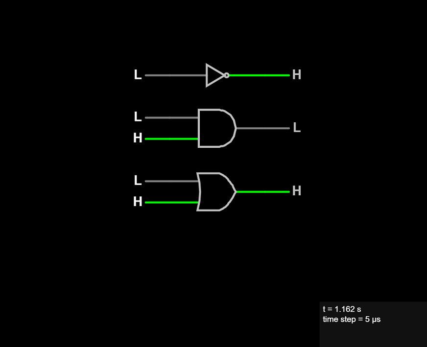

Fundamental Logic Gates
In your phone, tablet, or computer that you are using to look at this page with, there are only three fundamental logic gates that all other digital logic circuitry is built on. All digital logic boils down to one of these three functions: NOT, AND, OR.
From these you can build every computational device that ever was built from the past up through today and long into the future (at least until quantum computing becomes a thing).

The NOT Gate. The NOT gate is an inverter. It takes an input and outputs the opposite value.

The AND Gate. The AND gate takes two inputs and outputs a 1 if and only if both inputs are 1 otherwise it outputs a 0.

The OR Gate. The OR gate takes two inputs and outputs a 0 if and only if both inputs are 0 otherwise it outputs a 1.